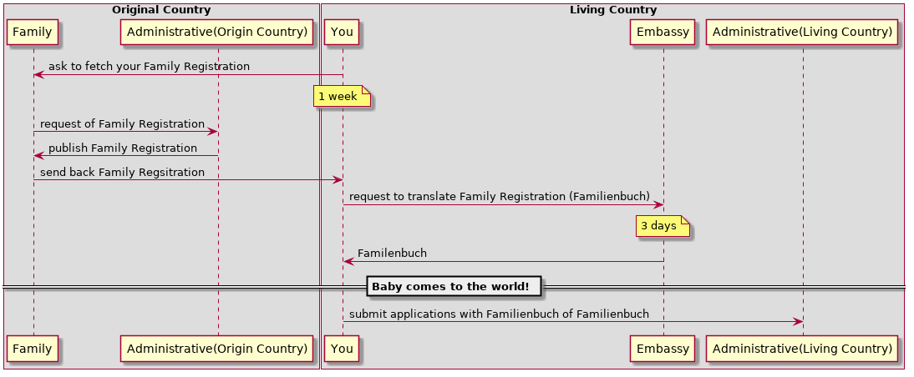
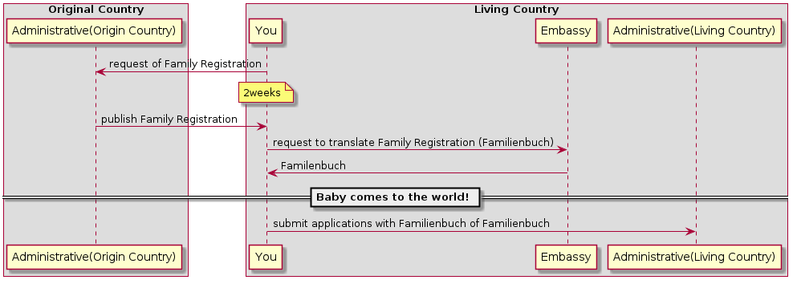

Camparijet
Table of Contents
Diary
How to authorize my Baby to public Service in Germany
For instance, it requires your Baby's identificatin number of German citizen and Residence Permission to access following service
- Kindergeld
- Elterngeld
- KITA Guteschein
Following shows actual flow from birth event to finish all conditinos.
It seems to take 3 months at least, if your original country is Japan. And bottle-neck is creating "Family Registration" record in Japan. That sounds a little bit funny.

Questions are
- Do we need official translator of Geburtsurkunde for Birth Certificate?
- Don't we have any easier way to finish Baby's Citizen Registration without Passport?
How to prepare Parent's birth proof (Familienbuch)
When Your family in your original country can help

When You do by yourself

Experiments
CV
Refer cv/index.html Refer cv/index.org